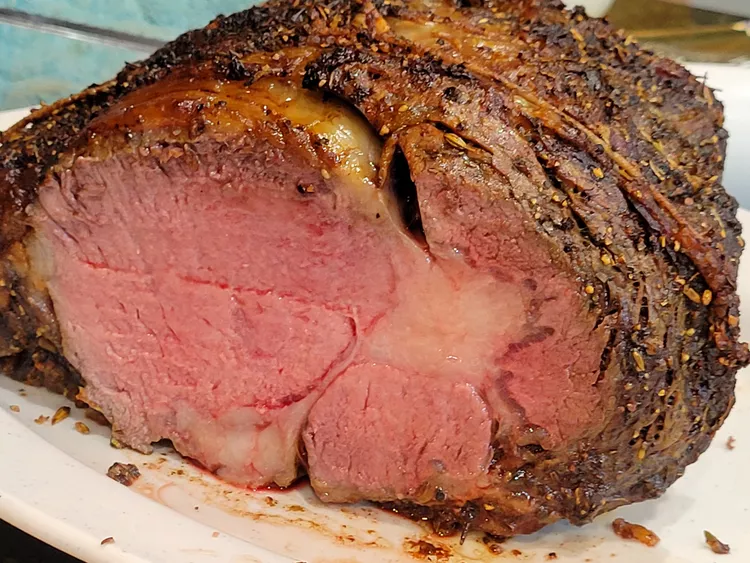

Back to main page
Chef John's Perfect Prime Rib
Use my easy "mathematical method" for cooking prime rib, and you'll be rewarded with the best prime rib that's
perfectly pink and delicious. For the math to work, you must leave the beef out at room temperature for at least 6
hours.

Chef John's Perfect Prime Rib
These are the ingredients you'll need to make this top-rated prime rib recipe:
- 1 (4 pound) bone-in prime rib roast (room temperature).
- 1/4 cup unsalted butter softened
- 1 Tablespoon freshly ground black pepper
- 1 teaspoon herbes de Provence.
- Kosher salt to taste
Directions
-
Gather the Ingredients. Place prime rib roast on a plate and bring to room temperature, 2 to
4 hours. Preheat the oven to 500 degrees F (260 degrees C).
-
Combine butter, pepper, and herbes de Provence in a bowl mix until well blended. Spread
butter mixture evenly over entire roast. Season roast generously with kosher salt.
-
Roast the 4-pound roast in the preheated oven for 20 minutes. (If your roast is larger or
smaller than 4 pounds, multiply the exact weight times 5 minutes).
-
Turn the oven off leaving the roast in the oven with the door closed, let the roast sit in
the oven for 2 hours..
-
Remove roast from the oven, slice, and serve.